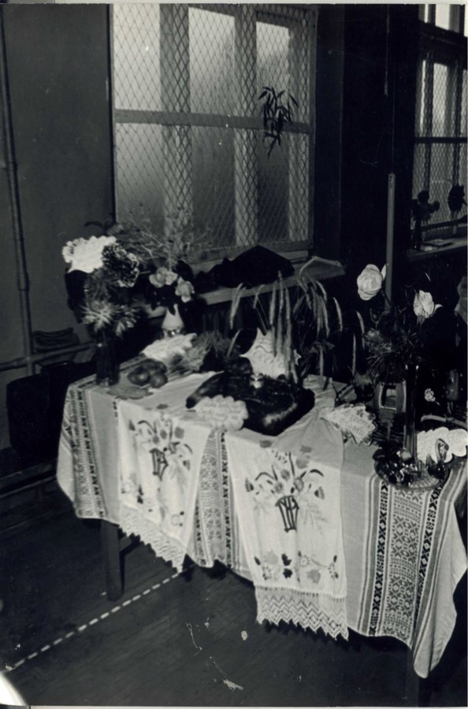

Музейні виставки та експозиції
Постійно діючі експозиції:
- «Шкільні роки — диво»: Фотостенди та документи з життя школярів 1960–1990-х років та початку XXI століття.
- «Вчительські династії»: Матеріали про сім'ї педагогів, які віддали десятиліття праці нашій школі.
- «Герої не вмирають»: Експозиція про випускників школи — воїнів-інтернаціоналістів та захисників України.
- «Волонтерський фронт ліцею»: Стенд, що висвітлює сучасну волонтерську діяльність учнівського та педагогічного колективу.
Тимчасові та сезонні виставки:
- «Свято квітів»: Традиційна щорічна виставка композицій до Дня вчителя.
- «Таланти твої, Україно!»: Виставка творчих робіт та декоративно-ужиткового мистецтва учнів.
- «Історично-культурні композиції побуту»: Проєкти з реконструкції елементів минулого нашого народу.

Посвята у гімназисти

Свято квітів